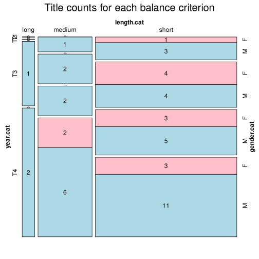

Click on a column heading to sort. Click on a text identifier to read the text (may not work in older browsers).
| Identifier | Encoding | Pages | Words | (Size) | Date (Slot) | Title | Author | Sex | Reprints |
|---|---|---|---|---|---|---|---|---|---|
| UKR18411 |
eltec-1 | 175 | 18114 | (short) | 1841 (T1) | Сердешна Оксана | Квітка-Основ'яненко, Григорій (1778-1843) | M | high |
| UKR18571 |
eltec-1 | 422 | 51378 | (medium) | 1857 (T1) | Чорна рада, хроніка 1663 року | Куліш, Пантелеймон (1819-1897) | M | high |
| UKR18581 |
eltec-1 | 108 | 25363 | (short) | 1858 (T1) | Конотопська відьма | Квітка-Основ'яненко, Григорій (1778-1843) | M | high |
| UKR18582 |
eltec-1 | 84 | 18895 | (short) | 1858 (T1) | Козир-дівка | Квітка-Основ'яненко, Григорій (1778-1843) | M | high |
| UKR18583 |
eltec-1 | 30 | 5007 | (short) | 1858 (T1) | Козачка | Вовчок, Марко [Марія Вілінська] (1833-1907) | F | high |
| UKR18611 |
eltec-1 | 29 | 10041 | (short) | 1861 (T2) | Не було змалку - не буде й до'станку | Нечуй-Вітер, А. [Олександра Куліш-Білозерська] (1828-1911) | F | low |
| UKR18621 |
eltec-1 | 43 | 11695 | (short) | 1862 (T2) | Інститутка | Вовчок, Марко [Марія Вілінська] (1833-1907) | F | high |
| UKR18622 |
eltec-1 | 35 | 10311 | (short) | 1862 (T2) | Від себе не втечеш | Вовчок, Марко [Марія Вілінська] (1833-1907) | F | low |
| UKR18651 |
eltec-1 | 69 | 13186 | (short) | 1865 (T2) | Дев'ять братів і десята сестриця Галя | Вовчок, Марко [Марія Вілінська] (1833-1907) | F | high |
| UKR18721 |
eltec-0 | 73 | 16860 | (short) | 1872 (T2) | Дві московки | Нечуй-Левицький, Іван (1838-1918) | M | high |
| UKR18722 |
eltec-1 | 31 | 10470 | (short) | 1872 (T2) | Лихий попутав. Оповідання | Мирний, Панас [Панас Рудченко] (1849-1920) | M | high |
| UKR18731 |
eltec-1 | 78 | 14104 | (short) | 1873 (T2) | Фармазони | Федькович, Юрій (1834-1888) | M | low |
| UKR18751 |
eltec-1 | 157 | 49789 | (medium) !! | 1875 (T2) | Семен Жук і його родичі. Хроніка | Яковенко, О. [Олександр Кониський] (1836-1900) | M | low |
| UKR18771 |
eltec-1 | 139 | 51674 | (medium) | 1877 (T2) | Скошений цвіт (Виїмок з галицьких образків) | Барвінок, Василь [Володимир Барвінський] (1850-1883) | M | low |
| UKR18791 |
eltec-1 | 170 | 27877 | (short) | 1879 (T2) | Марко Проклятий. Поема | Стороженко, Олекса (1806-1874) | M | low |
| UKR18801 |
eltec-1 | 418 | 102859 | (long) | 1880 (T3) | Хіба ревуть воли, як ясла повні? Роман з народнього життя | Мирний, Панас [Панас Рудченко] (1849-1920) | M | high |
| UKR18831 |
eltec-1 | 182 | 50132 | (medium) | 1883 (T3) | Захар Беркут | Франко, Іван (1856-1916) | M | high |
| UKR18841 |
eltec-1 | 114 | 25414 | (short) | 1884 (T3) | Boa constrictor | Франко, Іван (1856-1916) | M | high |
| UKR18871 |
eltec-1 | 128 | 29419 | (short) | 1887 (T3) | Товаришки | Пчілка, Олена [Ольга Косач] (1849-1930) | F | low |
| UKR18941 |
eltec-1 | 22 | 18770 | (short) | 1894 (T3) | Жаль. Оповідання | Українка, Леся [Лариса Косач] (1871-1913) | F | high |
| UKR18942 |
eltec-1 | 23 | 18625 | (short) | 1894 (T3) | Людина. Повість з життя жіночого | Кобилянська, Ольга (1863-1942) | F | high |
| UKR18951 |
eltec-1 | 45 | 10254 | (short) | 1895 (T3) | Не порозуміються. (Оповідання). | Кримський, Агатангел (1871-1942) | M | low |
| UKR18981 |
eltec-1 | 143 | 40482 | (short) | 1898 (T3) | Дві долі. Повість | Мордовець, Данило [Данило Мордовцев] (1830-1905) | M | low |
| UKR18991 |
eltec-1 | 37 | 9324 | (short) | 1899 (T3) | Хвора душа (споминки баби Оришки Прядчихи) | Кониський, Олександр (1836-1900) | M | low |
| UKR18992 |
eltec-1 | 67 | 15198 | (short) | 1899 (T3) | Баба Явдоха | Кониський, Олександр (1836-1900) | M | low |
| UKR18993 |
eltec-1 | 340 | 82525 | (medium) | ? (T3) | Гетьман Іван Виговський. Історична повість | Левицький, Іван [Іван Нечуй-Левицький](1837-1918) | M | high |
| UKR19001 |
eltec-1 | 302 | 93967 | (medium) | 1900 (T4) | Перехресні стежки | Франко, Іван (1856-1916) | M | high |
| UKR19011 |
eltec-1 | 187 | 49551 | (medium) !! | 1883 (T4) | Серед темної ночі | Грінченко, Борис (1863-1910) | M | high |
| UKR19012 |
eltec-1 | 34 | 9517 | (short) | 1901 (T4) | Над морем. Оповідання | Українка, Леся [Лариса Косач] (1871-1913) | F | high |
| UKR19021 |
eltec-1 | 232 | 63170 | (medium) | 1902 (T4) | Під тихими вербами | Грінченко, Борис (1863-1910) | M | high |
| UKR19022 |
eltec-1 | 285 | 95382 | (medium) | 1902 (T4) | Земля. Оповідання | Кобилянська, Ольга (1863-1942) | F | high |
| UKR19023 |
eltec-1 | 43 | 13637 | (short) | 1902 (T4) | Клопоти Савчихи | Маковей, Осип (1867-1925) | M | low |
| UKR19024 |
eltec-1 | 34 | 10557 | (short) | 1902 (T4) | Акула. Оповідання | Романова, Одарка (1853-1922) | F | low |
| UKR19051 |
eltec-1 | 54 | 14089 | (short) | 1905 (T4) | Vae victis!.. (Оповідання) | Чернявський, Микола (1868-1938) | M | low |
| UKR19052 |
eltec-1 | 62 | 16757 | (short) | 1905 (T4) | Приязнь (Оповідання з життя волинського Полісся) | Українка, Леся [Лариса Косач] (1871-1913) | F | high |
| UKR19091 |
eltec-1 | 161 | 54893 | (medium) | 1909 (T4) | В неділю рано зілля копала. (Оповідання) | Кобилянська, Ольга (1863-1942) | F | high |
| UKR19092 |
eltec-1 | 43 | 14651 | (short) | 1909 (T4) | Дурниця. Оповіданнє | Мирний, Панас [Панас Рудченко] (1849-1920) | M | low |
| UKR19101 |
eltec-1 | 66 | 13085 | (short) | 1910 (T4) | Брат на брата. Оповідання | Грінченко, Борис (1863-1910) | M | high |
| UKR19111 |
eltec-1 | 90 | 11589 | (short) | 1911 (T4) | Страчене життє | Тесленко, Архип (1882-1911) | M | high |
| UKR19112 |
eltec-1 | 370 | 89253 | (medium) | 1911 (T4) | Камінна душя | Хоткевич, Гнат (1878-1938) | M | low |
| UKR19113 |
eltec-1 | 49 | 11275 | (short) | 1911 (T4) | Месть чорногорця. Образ з минувшости сербських чорногорців | Воробкевич, Сидір (1836-1903) | M | low |
| UKR19121 |
eltec-1 | 45 | 15953 | (short) | 1912 (T4) | Тіні забутих предків. | Коцюбинський, Михайло (1864-1913) | M | high |
| UKR19122 |
eltec-1 | 69 | 22943 | (short) | 1912 (T4) | Блискавиці. Суспільна студія | Яцків, Михайло (1873-1961) | M | high |
| UKR19171 |
eltec-1 | 336 | 83339 | (medium) | 1917 (T4) | Забобон. Повість | Мартович, Лесь (1871-1916) | M | high |
| UKR19172 |
eltec-1 | 211 | 71274 | (medium) | 1917 (T4) | Записки Кирпатого Мефістофеля. Роман | Винниченко, Володимир (1880-1951) | M | high |
| UKR19181 |
eltec-1 | 411 | 105415 | (long) | 1918 (T4) | Князь Ярослав Осмомисл. Історична повість | Назарук, Осип (1883-1940) | M | low |
| UKR19191 |
eltec-1 | 112 | 36730 | (short) | 1919 (T4) | Борці за правду. Історичне оповідання | Кащенко, Адріан (1858-1921) | M | high |
| UKR19192 |
eltec-1 | 74 | 21122 | (short) | 1919 (T4) | З Дніпра на Дунай. Оповідання з часів скасування Запорозької Січі | Кащенко, Адріан (1858-1921) | M | low |
| UKR19193 |
eltec-1 | 127 | 31471 | (short) | 1919 (T4) | Під Корсунем. Історична повість | Кащенко, Адріан (1858-1921) | M | high |
| UKR19201 |
eltec-1 | 419 | 152676 | (long) | 1920 (T4) | Чмелик. Роман для юнацтва з ілюстраціями | Королів-Старий, Василь (1879-1943) | M | low |